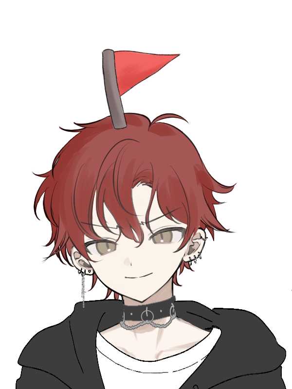
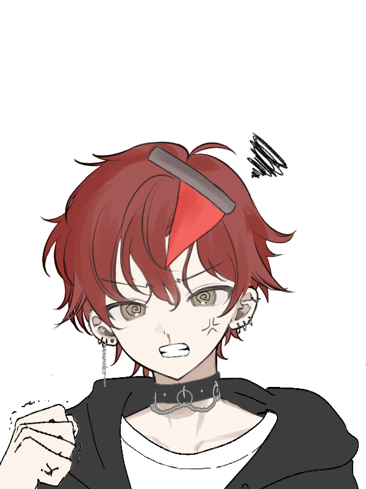

Bonk-A-Red-Flag is inspired by the arcade game Whack-A-Mole. However, instead of hitting a mole,
you hit a red flag character  (you can tell based on the flag on his head)
as he appears and reappears in different classroom windows.
He'll get kind of mad  when you hit him (I mean, you gave him a nosebleed),
but he'll just move out of the classroom to annoy you.
Thank you to Angle Brace on YouTube for saving our grade and making this YouTube video for us to use as
reference (https://www.youtube.com/watch?v=b20YueeXwZg)! We also used this link to make the Red-Flag character
(https://picrew.me/en/image_maker/1747767). The flag, however, was drawn on.
Group 7 of Pinatubo, consisting of Elise Victoria N. Lasan, James Matthew D. Parcon, and Skyler Nicola T. Sarmiento made this game for their third quarter CS project. Initially, they were supposed to create a dating sim, but it was too time-consuming to make, so they opted for an alternative, a Whack-A-Mole-like game. Though, not wanting their written dating sim plot to go to waste, they used one of the suitors as the "mole" (A.K.A. the most aggressive one). Because of that, this troll of a game came into existence! We swear that the acronym for "Bonk-A-Red-Flag" was unintentional. . .